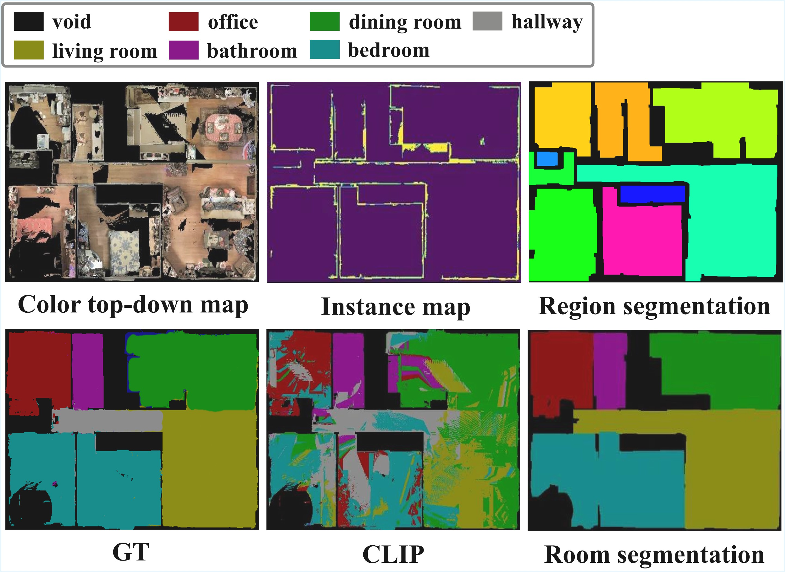

Instance-Enriched Semantic Maps
for Visual Language Navigation

Abstract
Visual Language Navigation (VLN) aims to enable an embodied agent to navigate within complex environments by following natural language instructions. Achieving this goal requires agents to jointly perceive their surroundings and interpret human language. Recent approaches build semantic spatial maps and leverage Large Language Models (LLMs) for reasoning and decision making. Despite these advances, existing VLN systems still suffer from a lack of instance-level object detail and limited robustness to diverse user queries, which hinders reliable navigation in complex indoor environments. To address these limitations, we propose Instance-Enriched Semantic Maps, a unified framework with three key contributions:
(1) Instance-level 2.5D mapping that constructs maps from RGB-D observations via open-vocabulary panoptic segmentation, preserving vertical distinctions and reliably capturing small objects, while storing rich semantic attributes including color, material, and natural language captions enriched with room-level context.
(2) Robust query processing via Multi-Type Expert Fusion Retrieval (MTEFR), which dynamically routes queries across type-specialized experts and integrates their outputs through score-level fusion, achieving consistent goal selection across structurally diverse query formulations.
(3) Storage-efficient semantic representation that achieves approximately 96% storage reduction compared to 3D scene-graph approaches while preserving sufficient spatial information for precise navigation.
Methodology

System Overview. Upper: Instance-Level 2.5D Open-Vocabulary Mapping via SEEM (left), Room-Level Semantic Segmentation via LSD+CLIP (center), Instance Captioning with LLaMA 3.2 Vision + GPT-4 (right). Lower: MTEFR gate LLM assigns weights (ωO, ωR, ωD, ωA) over four expert LLMs integrated via score-level fusion.
Instance-Level 2.5D Open-Vocabulary Mapping
SEEM panoptic segmentation extracts per-frame instance masks and open-vocabulary embeddings from RGB-D inputs. Candidates are associated via geometric (max-overlap, δgeo=0.4) and semantic (cosine, δsem=0.85) matching, then fused by mask OR and weighted-average embedding update. A secondary pass merges long-range duplicates. Each grid cell stores a list of instance indices, enabling multi-occupancy to preserve vertical distinctions that 2D projections collapse.
Room-Level Semantic Segmentation
Structural boundary elements from SEEM instance masks are merged into a binary boundary mask. LSD extracts wall-like linear structures using NFA-based validation; segments are rasterized and morphologically closed. Connected component analysis identifies room regions; CLIP vision-language similarity assigns semantic room-type labels with majority-vote aggregation per region to suppress pixel-level noise.
Instance Captioning
Representative keyframes are selected by mask confidence and observation frequency. LLaMA 3.2 Vision extracts color, material, and distinctive features per frame in concise two-sentence descriptions. GPT-4 (5-shot) aggregates multi-frame captions into a compact JSON record — category, room-type, color, material, and a natural language caption — enabling attribute-level retrieval far beyond fixed-dimensional embeddings.
MTEFR: Multi-Type Expert Fusion Retrieval
A gate LLM assigns query-adaptive weights {ωe} over four type-specialized expert LLMs (Object, Room, Description, Abstract). Each expert returns a top-κ ranking; rank scores νe,d are fused via weighted-sum Ssum and peak P combined as Ud = λPd + (1−λ)Ssumd, with λ schedule balancing multi-expert consensus and single-expert dominance.
Experiments
2.5D Open-Vocabulary Mapping

2.5D Mapping. Left: 3D rendered view. Right: top-down 2.5D semantic map with instances color-coded by category. Colored boxes highlight small objects (bottles, laptops, cups) reliably preserved without being absorbed into neighboring instances.
Instance-level semantic labeling (pred-normalized AUC).
| Dataset | Method | top1 | top5 | top50 | AUC↑ | Inst. Diff↓ |
|---|---|---|---|---|---|---|
| Replica — Prediction-normalized | ||||||
| Replica | HOV-SG (3D) | 0.001 | 0.006 | 0.098 | 0.093 | 86.6 |
| Replica | Ours (2.5D) | 0.172 | 0.295 | 0.371 | 0.356 | 2.6 |
| HM3DSem — Prediction-normalized | ||||||
| HM3DSem | HOV-SG (3D) | 0.000 | 0.000 | 0.006 | 0.085 | 417.6 |
| HM3DSem | Ours (2.5D) | 0.081 | 0.179 | 0.291 | 0.371 | 67.4 |
Only instances with IoU > 50% are considered matched pairs.
Room Semantic Segmentation


Room Segmentation (MP3D). Top row: colorized top-down map, predicted instance map, region segmentation. Bottom row: GT, CLIP baseline, proposed method.
Room segmentation on MP3D.
| Method | Acc | mAcc | mIoU |
|---|---|---|---|
| CLIP (baseline) | 0.73 | 0.72 | 0.53 |
| Ours | 0.89 | 0.86 | 0.75 |
+16%p Acc · +14%p mAcc · +22%p mIoU over CLIP-only pixel-wise classification.
Navigation Evaluation
Object Retrieval (O-SR %) and Navigation Success (N-SR %) on HM3DSem — 250 trials / query type.
| Method | (o) | (o,r) | (o,d) | (o,r,d) | (a,r,d) | |||||
|---|---|---|---|---|---|---|---|---|---|---|
| O-SR | N-SR | O-SR | N-SR | O-SR | N-SR | O-SR | N-SR | O-SR | N-SR | |
| VLMaps | — | 12.00 | — | 6.00 | — | 4.00 | — | 8.00 | — | 2.00 |
| HOV-SG | 40.00 | 15.00 | 8.00 | 18.18 | 10.00 | 23.07 | 8.00 | 18.18 | 2.00 | 0.00 |
| HOV-SG (w/ desc.) | 42.00 | 19.05 | 16.00 | 25.47 | 14.00 | 21.05 | 10.00 | 23.07 | 2.00 | 0.00 |
| Ours (Full+MTEFR) | 70.00 | 38.57 | 26.00 | 42.31 | 22.00 | 40.91 | 22.00 | 40.91 | 14.00 | 35.71 |
| Ours (Full+SPR) | 58.00 | 34.48 | 26.00 | 38.46 | 16.00 | 43.75 | 18.00 | 44.44 | 6.00 | 52.00 |
| Ours (Obj.) | 58.00 | 36.21 | 24.00 | 41.67 | 12.00 | 50.00 | 18.00 | 44.44 | 4.00 | 48.00 |
| Ours (Obj.+Desc.) | 60.00 | 35.00 | 24.00 | 45.83 | 16.00 | 43.75 | 18.00 | 44.44 | 6.00 | 52.00 |
| Ours (Obj.+Room) | 60.00 | 38.33 | 26.00 | 46.15 | 14.00 | 48.22 | 14.00 | 50.00 | 8.00 | 37.50 |
N-SR computed over retrieval-successful trials only. Query types: (o) object-only · (o,r) +room · (o,d) +description · (o,r,d) all explicit · (a,r,d) abstract. VLMaps excluded from O-SR (no instance-level identity).
Storage Cost
Storage comparison on HM3DSem (MB).
| Dim. | Method | 00824 | 00829 | 00862 | 00873 | 00890 | Avg. |
|---|---|---|---|---|---|---|---|
| 3D | HOV-SG | 254 | 342 | 190 | 263 | 187 | 248 |
| 2D | VLMaps | 186 | 99 | 179 | 68 | 57 | 118 |
| 2.5D | Ours | 11 | 10 | 13 | 9 | 9 | 10 |
~96% reduction vs. HOV-SG · ~92% vs. VLMaps. Multi-floor scenes: first floor only.
Visual Results
Proposed Mapping Results
Click a map instance mask to highlight it in red and inspect its information.
To explore other scenes, use the left and right arrow buttons.
RGB Scene
Proposed Mapping Results
Instance Information (Proposed Map)
Select an instance mask in the map to view information.
Navigation Results (HM3DSem: 00824-Dd4bFSTQ8gi)
Hyperparameters
| Dataset | (hmin, hmax) | δgeo | δsem | ωgeo | ωsem | κ | γ | μ |
|---|---|---|---|---|---|---|---|---|
| MP3D | (0.0, 3.0) | 0.4 | 0.85 | 0.7 | 0.3 | 2 | 0.75 | 16 |
| Replica | (0.0, 2.0) | |||||||
| HM3DSem | (0.0, 3.0) |
Prompt Templates
Four prompt pipelines are used: LLaMA 3.2 Vision for per-keyframe attribute extraction, GPT-4 for multi-frame caption aggregation, GPT-4 for MTEFR gate and expert ranking, and GPT-4 for evaluation query generation. Each message is labeled by its conversation role.
1. Instance Captioning
1-A. Visual Attribute Extraction — LLaMA 3.2 Vision
Called once per representative keyframe of each instance. The model is given the predicted category label as context and must describe color, material, and one distinctive feature in exactly two sentences with no repetition.
Q: There is one {class_name} in the scene. Describe its color,
material, and one special feature. Don't repeat any word or
phrase. Limit your response to 2 sentences maximum. Finish as
soon as main traits are mentioned. Avoid repeating words,
phrases, or patterns.
The rug is a dark grey, woven, and has a subtle pattern of rounded shapes. It has a soft, plush pile.
1-B. Caption Aggregation — GPT-4
Aggregates the list of per-frame LLaMA captions for one instance into a single compact JSON record. Five in-context examples (bed, sofa, curtain, chest_of_drawers, sink) are prepended as few-shot turns before the actual instance input.
Identify and describe instances. Input and output must be in JSON format. The input field 'captions' contains a list of image captions aiming to identify the instance. Output 'color' as a visual color of the identified instance. Output 'material' making up the identified instance. Output 'caption' as a concise description of the identified instance.
{
"category": "sofa",
"room": "living room",
"captions": [
"The sofa is a brown leather couch placed in front of a window,
well-maintained and comfortable.",
"The sofa is an antique-style couch made of brown leather with
a vintage appearance.",
"The sofa is a brown leather couch; a doll is sitting on it."
]
}
{
"category": "sofa",
"room": "living room",
"color": "brown",
"material": "leather",
"captions": "The well-maintained brown leather couch, with a
vintage charm, sits in front of a window."
}
2. MTEFR
2-A. Gate LLM — GPT-4
Analyzes the input query and outputs integer signal scores [0–4] for four dimensions, plus optional extracted hints, which together determine the expert weights {ωe}.
You are a query signal analyzer for hierarchical object-goal navigation.
Task:
1) Analyze which signals are strong in the query: object, room, caption, abstract.
2) Return integer scores in [0, 4] for each signal.
3) Extract optional hints:
- object_category : canonical object phrase if explicitly/strongly implied, else null
- room_hint : room/location phrase if present, else null
- caption_hint : visual-attribute phrase if present, else null
- abstract_hint : affordance/function phrase if present, else null
Scoring rubric:
object — explicit object noun/category mention strength
room — room/location context strength
caption — concrete visual details (material/color/shape/parts) strength
abstract — functional/affordance intent without explicit object strength
Output JSON only. No markdown. No extra text.
Output schema:
{
"scores": {"object": int, "room": int, "caption": int, "abstract": int},
"object_category": string|null,
"room_hint" : string|null,
"caption_hint" : string|null,
"abstract_hint" : string|null
}
Query:
{query_text}
Return strict JSON only.
{
"scores": {"object": 0, "room": 2, "caption": 3, "abstract": 4},
"object_category": null,
"room_hint" : "office",
"caption_hint" : "red",
"abstract_hint" : "seating"
}
2-B. Expert LLMs — GPT-4
All four experts share the same system skeleton and user template. Each expert receives a type-specific focus directive appended to the system prompt that restricts its reasoning to one information dimension.
You are a ranking expert in a hierarchical navigation system.
Rules:
- Use ONLY the provided query and candidate fields.
- Return exactly top-{n} unique instance IDs, sorted best to worst.
- IDs must be chosen from the candidate list only.
- If confidence is low, still return best possible top-{n}.
Output JSON only. No extra text.
{ "ranked_instance_ids": [id1, id2, ...] }
--- Type-specific focus directive (appended per expert) ---
Object Expert:
Focus on object identity/category matching.
Primary: category/object semantics. Secondary: attribute hints.
Do not over-weight room context unless it disambiguates ties.
Room Expert:
Focus on room compatibility.
Primary: room_hint / query room semantics vs candidate room_cat.
Secondary: object plausibility in that room.
Caption Expert:
Focus on fine-grained visual attributes.
Primary: caption_hint / query visual details vs candidate caption.
Prefer candidates with discriminative detail match.
Abstract Expert:
Focus on affordance / functional intent.
Infer likely object from function-level query semantics.
Do not require exact object noun overlap.
Query: {query_text}
Candidates (JSON):
[
{"id": 1, "category": "chair", "room_cat": "office",
"caption": "A vivid red leather chair with a metal frame."},
{"id": 2, "category": "sofa", "room_cat": "living room",
"caption": "Light blue velvet sofa with buttoned design."},
...
]
Return top-{n} ranked instance IDs as JSON only.
{ "ranked_instance_ids": [1, 3, ...] }
3. Evaluation Query Generation
Shared Constraints — GPT-4
Each query is generated from a representative keyframe image with the predicted category and room tokens. Three shared constraint sets apply to all query types; per-type rules enforce the complexity spectrum.
You are a careful vision-language assistant.
Follow the format strictly. Use ONLY one choice from each provided list.
Keep EXACT object/room tokens when required.
Prefer concrete, visually verifiable attributes.
Shared lexical lists:
VERB_VARIANTS = [Find, Look for, Search for, Seek]
ATTR_CLAUSE_VARIANTS = [with, featuring, showcasing,
characterized by, sporting]
ROOM_PHRASES(rc) = [in the {rc}, inside the {rc}, within the {rc},
at the {rc}, located in the {rc}, found in the {rc}]
Common sentence rules (all types):
- Write EXACTLY ONE complete sentence ending with a period.
- No bullet points, markdown, explanations, or prefixes.
- Do NOT use quotes or brackets.
- Avoid words like "object", "instance", or "image".
Type (o) — Object Only
You are given an image and a target object category.
Target object category (use EXACTLY as given): "{instance_category}"
Task:
- Generate a short, natural search query that helps find this target.
- Start with EXACTLY ONE verb from VERB_VARIANTS.
- Optionally add ONE attribute clause from ATTR_CLAUSE_VARIANTS.
- Use the object token EXACTLY — no synonyms, no pluralization.
- Do NOT mention any room or location phrase.
[+ keyframe image]
Pattern:
Find a {instance_category} featuring metal legs.
Look for a {instance_category} with a glass top.
Find a chair featuring a dark wooden frame and a cushioned seat.
Type (o,r) — Object + Room
You are given an image and two target categories.
Object: "{instance_category}" (use EXACTLY)
Room: "{room_category}" (use EXACTLY — no synonyms, no adjectives)
Task:
- Include BOTH tokens.
- Start with EXACTLY ONE verb from VERB_VARIANTS.
- Include the room using EXACTLY ONE phrase from ROOM_PHRASES.
[+ keyframe image]
Pattern:
Find a {instance_category} inside the {room_category}.
Look for a {instance_category} located in the {room_category}.
Look for a chair located in the office.
Type (o,d) — Object + Description
You are given an image and a target object token.
Object: "{instance_category}" (use EXACTLY)
Optional references (from instance captions):
{reference_text}
Task:
- Include AT LEAST TWO concrete attributes if visible:
(i) ONE color or material word
(ii) ONE distinctive feature that disambiguates among same-category items
(e.g., ice maker, sliding doors, brass doorknob, rounded edge,
metal legs, glass top, stainless-steel finish, woodgrain texture)
- Use EXACTLY ONE connector from ATTR_CLAUSE_VARIANTS.
- Do NOT mention any room or location phrase.
[+ keyframe image]
Pattern:
Find a {instance_category} featuring a stainless steel finish
and a built-in water dispenser.
Find a chair characterized by a vivid red leather surface and a metal frame.
Type (o,r,d) — Object + Room + Description
You are given an image and two tokens.
Object: "{instance_category}" (use EXACTLY)
Room: "{room_category}" (use EXACTLY)
Optional references (from instance captions):
{reference_text}
Task:
- Include AT LEAST TWO concrete attributes (same rules as (o,d)).
- Use EXACTLY ONE connector from ATTR_CLAUSE_VARIANTS.
- Include the room using EXACTLY ONE phrase from ROOM_PHRASES.
[+ keyframe image]
Pattern:
Find a {instance_category} featuring a glossy white finish and
sliding doors located in the {room_category}.
Find a chair characterized by a vivid red leather surface and a metal frame found in the office.
Type (a,r,d) — Abstract + Room + Description
You are given an image and a hidden object token.
Hidden object token: "{instance_category}" (DO NOT output this token)
Room: "{room_category}" (use EXACTLY)
Optional references (from instance captions):
{reference_text}
Task:
- Produce ONE affordance-based query — NO explicit category token in output.
- Start with EXACTLY ONE verb from VERB_VARIANTS.
- Include AT LEAST TWO concrete attributes if visible (color/material +
distinctive feature).
- Use EXACTLY ONE connector from ATTR_CLAUSE_VARIANTS.
- Include the room using EXACTLY ONE phrase from ROOM_PHRASES.
[+ keyframe image]
Pattern:
Find something to keep food cold featuring a stainless steel finish
and an ice maker located in the {room_category}.
Find something to sit on characterized by a vivid red leather surface and a metal frame found in the office.
BibTeX
@article{IESM_VLN_2026,
title = {Instance-Enriched Semantic Maps for Visual Language Navigation},
author = {Anonymous Authors},
journal = {Engineering Applications of Artificial Intelligence (EAAI)},
year = {2026},
url = {https://devtechproject123-collab.github.io/iesm_vln}
}